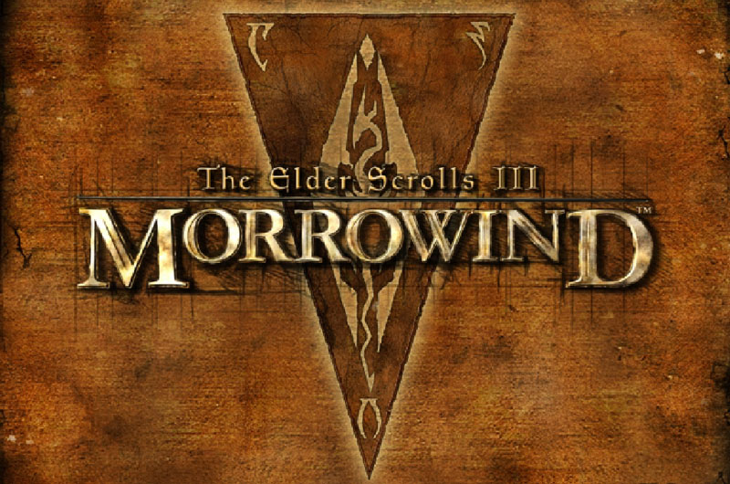

Morrowind sous Windows 10
Description
Windows 10 64 bits fait tourner correctement Morrowind et ses extensions (même si les performances sont moins bonnes que sous Windows XP 32 bits). Cependant, il est impossible de passer en mode plein écran.
Dans le meilleur des cas, les bordures de la fenêtre sont visibles et la fenêtre n'est pas centrée. C'est cela qui m'a conduit à écrire un petit programme qui détecte la fenêtre de Morrowind lorsque le jeu est lancé et la force à passer en plein écran.
Instructions d'utilisation
Il faut d'abord lancer Morrowind_Fullscreen.exe puis le jeu. Dès que Morrowind_Fullscreen.exe trouve la fenêtre du jeu, il va la passer en plein écran puis se fermer automatiquement.
Obtenir le programme
Ce programme compile sous Cygwin. Il a été testé sous Windows 10 64-bit Professional N build 10240.
Si vous obtenez l'erreur "Error : failed to set the window style", lancez Cygwin en mode administrateur pour que le programme ait le droit de modifier la fenêtre de Morrowind.
Les sources sont disponibles sur GitHub.
Page créée le 14/11/2015.